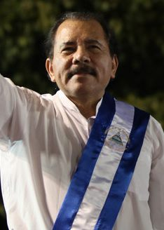

니카라과 오르테가, “더는 선거 없다” 선언… 20년 집권 연장 수순
니카라과의 대니얼 오르테가 대통령이 “더 이상 선거를 치르지 않겠다”고 선언했다. 2007년부터 이어온 장기 집권을 사실상 무기한 연장하는 조치로, 국제사회가 일제히 비판했다.
손승종 기자 · 2026.07.23
橋국제

오르테가 대통령이 1979년 산디니스타 혁명 47주년 기념 연설에서 니카라과가 더는 선거를 치르지 않을 것이라고 밝혔다고 알자지라·CNN 등이 전했다. 야권 도전을 차단하기 위한 조치라는 해석이 나온다.
광고 문의 · 300×25080세의 오르테가 대통령은 야권이 미국의 지배를 받는다고 주장하며 이번 결정을 정당화했다. 그는 2007년 재집권 이후 헌법·제도 개편을 통해 권력을 강화해 왔다.
유엔과 미주기구(OAS), 미국, 유럽의회 등은 이 발표를 규탄하고 니카라과의 민주주의 회복을 촉구했다. 선거를 통한 권력 교체 가능성이 사라지는 데 대한 국제사회의 우려가 크다.
선거의 폐지는 견제와 균형이라는 민주주의의 기본 원리를 약화시킨다는 지적이 나온다. 야당·언론·시민사회의 활동 공간이 좁아지는 흐름과 맞물려 있다는 분석이다.
華橋時報는 특정 정권의 정통성을 예단하지 않되, 시민이 정기적 선거로 권력을 선택하고 교체할 권리를 보편적 가치로 본다. 권력의 견제 장치가 줄어드는 변화는 국경을 넘어 주목할 사안이다.
출처·참고 (사실 확인용 — 본문은 직접 재작성)
· 알자지라
· CNN
· 알자지라
· CNN